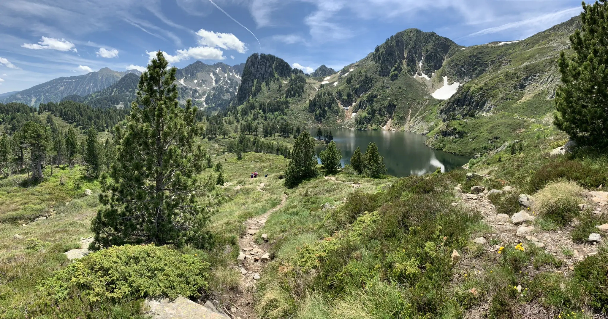

Modéré
Pic de Tarbesou
Une boucle d'altitude au départ du Col de Pailhères, qui grimpe jusqu'au sommet à 2 364 m. En chemin, les étangs de Rabassoles offrent un décor de granit et d'eau claire avant le panorama final.
- 11,7 km
- 4h45
- 600 m D+